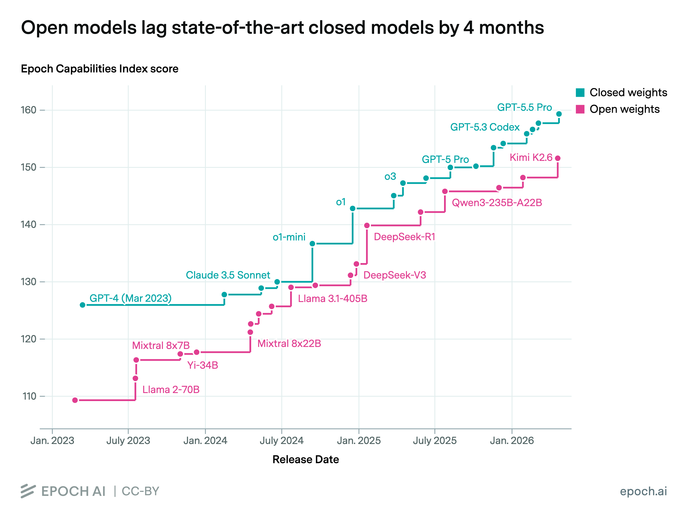
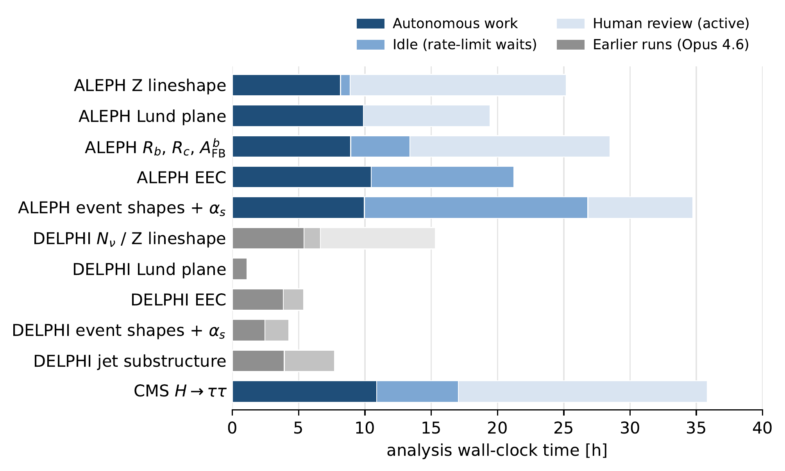
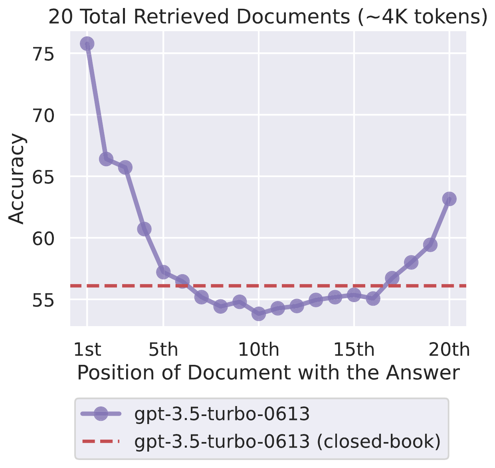
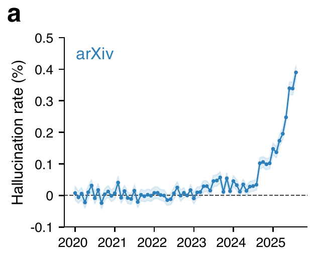
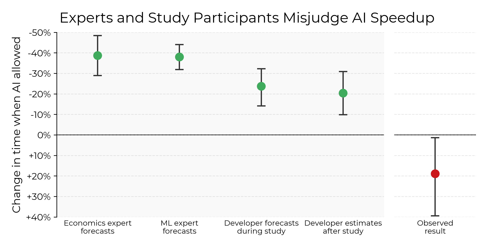
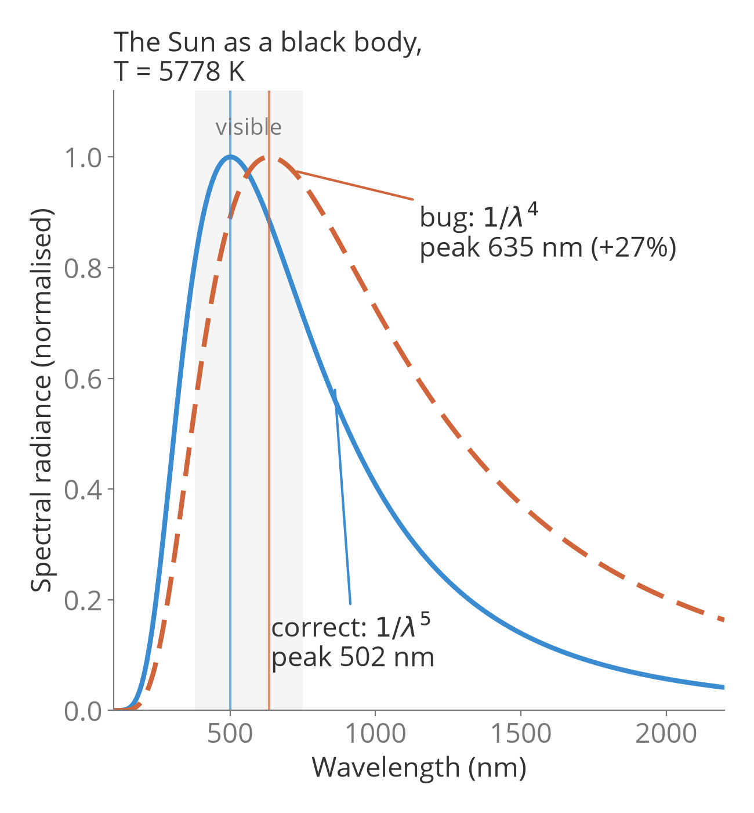

Practicalities
- 10:00–12:00 foundations, 12:00–13:00 lunch, 13:00–15:00 advanced. Laptops out.
- No experience needed. We define every term the first time we use it (orange boxes), and give glossary at the end.
- Questions: interrupt us, or post in Mattermost. There are no stupid questions. If you're lost, three others are too.
- It's OK to discuss with the people next to you during the presentation, but do so quietly. Helping each other is encouraged.
- Everything here is practice. Philosophy, ethics and the future of science: lunch and afterwards. We'll gladly join.
- A warning: some of what we show may feel threatening to how we work as scientists. That's a legitimate reaction. Let's talk about it.
- Materials: github.com/AgenttiX/ai-workshop
Schedule
Session 1: Foundations, 10:00–12:00
- Welcome
- The state of AI in 2026, chat vs. harness, caveats
- Live demo: exercise 01
- Setup check and hands-on exercises, with us going around
- Recap
Session 2: Advanced, 13:00–15:00
- Extending the harness: skills, hooks, agents, MCP
- Making your project AI-ready: tests, linting, CI
- Three demos: continuous research loops, supercomputer use, running local models
- Hands-on and discussion
- Final words
Both sessions start sharp. Theory and demos come first; the hands-on part gets the rest of the time.
What you can do afterwards:
- Understand the main developments of in AI in recent years and the related jargon, as well as why an AI agent working in your files can do far more than a chat window
- Run Claude Code on a real project
- Use guiding files like an
AGENTS.mdfor your project and manage the context window - Extend the harness with skills, hooks, subagents and MCP servers
- Make your research code "AI-ready" with tests, lint, types and CI, so that the agent catches its own mistakes
- Judge when not to use AI
How we learned all this: by asking
- We learned to use these tools on our own, mostly by asking Claude and other models along the way: "What does this error mean?", "What is a virtual environment?", "How do I do this in VS Code?"
- That is the mindset shift: a patient explanation of almost anything is now one question away, at your level, as many times as you need it
- Today: when in doubt, ask AI (Claude) first, then us. No question is too basic for it
- The usual rule still applies: check what matters. It can be wrong, and we'll show you how to catch that
Stuck? Try: "I'm new to this. Explain what just happened and what I should do next."
Words we'll use all day
| Model (LLM) | The AI itself: a program trained on huge amounts of data to predict what comes next. Claude, GPT and Gemini are models. |
| Prompt | What you write to the model. |
| Token | The unit a model reads and writes at once. Limits and prices are counted in tokens. |
| Context window | Everything the model can "see"/"remember" at once: your messages, its replies, the files it has read. It has a maximum size. |
| Agent | A model prompted in a specific manner, and can act on its own, like read files and run code. |
| Harness | A program around the model that makes it an agent: it gives the model tools, manages its context and asks your permission. Claude Code is a harness. |
| Tool call | One action of the agent, e.g. "read this file" or "run this command". |
| Terminal | A window where you type commands instead of clicking. |
| Repository | A project folder whose history is tracked by Git, the version-control program. |
A short timeline
| 2022 | ChatGPT: chat with a language model |
| 2023 | GPT-4, Claude 2: useful for text and code snippets. You paste, it answers. Context windows grow to 100k–200k tokens |
| 2024 | Tool use, 1M-token context windows, the first reasoning models (they "think" before answering), early coding agents |
| 2025 | Claude Code, Codex, Copilot agent mode: agents in your editor and terminal. Tasks of about an hour without supervision |
| 2026 | Claude 5 family, multi-agent harnesses, agents working for hours on research tasks |
The step that most scientists have missed: from chat to agents with access to your files and tools.
The one plot to remember: task horizon
- How long a task (measured by how long it takes a human expert) an AI completes on its own with 50 % success. Doubling every ~4 months since 2023. Note the logarithmic scale
- 2023: minutes. 2025: an hour or two. 2026: ~12 h, and the best models are beyond what the benchmark can measure reliably
- Extrapolation is dangerous. But the trend hasn't bent yet.
Our plot of METR's data: time horizons (May 2026), GPT-5.6 Sol (June 2026). T. Kwa et al., Measuring AI ability to complete long tasks, arXiv:2503.14499.
Models today
- Cloud frontier models:
- Anthropic: Claude 5 (Fable 5.1, Opus 5.5, Sonnet 5), Haiku 4.5
- OpenAI: GPT-6 Astra, Sol and Luna (also in Codex)
- Google: Gemini 3.1 Pro, Gemini 3 Deep Think, Gemini 3.8 Flash
- Open-weight models you can run yourself: Gemma 4, Qwen 3.8, OpenAI's gpt-oss-20b/120b, and larger ones (Kimi, DeepSeek) that need a server. Open-weight = you can download the model and run it on your own computer. Roughly 1–2 years behind the frontier, but useful
- Context windows of up to ~1M tokens: your whole code base, or a paper's LaTeX plus the analysis, in one session, in working memory
- Reasoning: the model "thinks" before answering; you can trade time for quality
- Tools: the model can call functions — read a file, run a command, search the web
How far behind are the open-weight models?

Science is not done in a chat window
- Navier–Stokes, September 2026: ~10 000 cooperating AI agents ran for ~88 hours and produced a 166-page proof, checked in the Lean proof assistant, that the 3D Navier–Stokes equations can blow up in finite time under a smooth, localized external force. Not yet peer-reviewed; the unforced problem remains open. (OpenAI, Finite time blowup for Navier–Stokes, preprint, 8 Sep 2026; Lean code)
- The pattern in the recent results: not a person asking a chatbot, but agents running for hours or days — deriving, coding, checking, iterating
- The same pattern scaled down is what you'll use today: an agent that reads your code, runs your tests and fixes its own errors
- TODO: 1–2 examples closer to home (physics / Kumpula)
Closer to home: particle-physics analyses by an agent

Chat vs. harness
Chat
- You copy code and errors in, you copy answers out
- The model sees only what you paste
- It cannot check the validity of its output
- You are the loop
Harness
- The model reads your files, runs your commands, edits, tests
- It sees the actual code, data and errors
- It verifies its own work with your tools
- The loop runs itself; you review and steer
In our experience, a huge difference in what you can get done — and in what can go wrong. Hence this workshop.
What is a harness?
Harness (Claude Code, Codex, Copilot, Cursor, OpenCode, …)
Model + tools + context management + permission loop
- Tools: read/edit files, run shell commands, search, web, MCP servers, subagents
- Context management: what goes into the model's window:
AGENTS.md, files, tool output, memory, compaction - Permission loop: the agent proposes an action, you (or your rules) approve it
Why file access and context matter
- The model knows only what's in its context window (everything it sees at once): no memory between sessions unless the harness provides it
- File access means the context is filled with the truth: your code, your data, the actual error message
- Context is finite and degrades when full: the harness (and you) decide what goes in
AGENTS.md: the standing instructions, read every session- Tool outputs: what it read and ran
- Compaction: summarizing the conversation so far when the window fills up
- Rule of thumb: one task per session, clear when switching

The landscape
| Harness | Provider | Where it runs | Notes |
|---|---|---|---|
| Claude Code | Anthropic | terminal, VS Code, JetBrains, web | Used today. Skills, hooks, agents, MCP |
| Codex | OpenAI | terminal, IDE, cloud | Similar concepts |
| GitHub Copilot | GitHub / Microsoft | VS Code, cloud | Free with the Student Developer Pack — our backup |
| Cursor, Antigravity | Cursor, Google | own IDE | IDE-first |
| OpenCode | open source | terminal | Any model, incl. local |
| Chat products | Claude.ai Projects, ChatGPT | browser | Good for text; no file access to your machine |
Cloud sandboxes exist (Claude Code on the web, Codex cloud), but a harness on your own machine, with your data and your tools, is more capable. That's what we use.
It still makes things up — now at scale
- Hallucination: confident, plausible, wrong. Citations that don't exist, APIs that don't exist, physics that's off by a factor of 2
- Sycophancy: it tends to agree with you. Ask for critique explicitly, or let a second agent review
- The remedy is not trust but verification built into the workflow: tests, validations, cross-checks against known results — things the agent can run itself
- Session 2 is about exactly this: making your project a place where the agent's mistakes get caught before they reach you

Security and privacy
- An agent with shell access is a user on your machine. It can delete, upload, install.
- Permission modes: ask before everything, allow-list the safe commands, or let auto mode (a safety classifier) approve actions. Know what each one allows. Auto mode only for work on trusted material, preferably sandboxed
- Never paste secrets, tokens or personal data into a prompt (unless the model is fully on your own machine). Check your provider's data policy and the university's guidelines
- Prompt injection: a web page, a PDF, a paper abstract can contain instructions for the agent. Untrusted input + write access = a very bad day
- Version control (git) everything. An agent on the only copy of your thesis is a gamble
Cost, limits, and your own understanding
- Cost: subscriptions have usage quotas; agents burn tokens fast. Local models are the free-but-slower fallback
- Skill atrophy: "How do I keep understanding the physics when the AI writes the code?"
- Let it do the mechanical parts. Read everything before it goes into a paper.
- Ask it to explain. Ask it to teach. Make it show the derivation.
- Decide deliberately what you want to keep doing by hand
- Incentives: if the productivity gain is as large as it looks to us, "AI or perish" may be coming. We don't have an answer. We have a lunch break.
- Which provider? Ethical, legal and practical considerations differ. Know them; make a choice; revisit it
Does it actually make us faster?

Exercise 00: setup check (10 min)
You set up your laptop at home with the guide in the README (the front page of the repository):
- VS Code with the Python and Claude Code extensions (extension = an add-on to VS Code)
- Python 3.12 or later and Git
- The workshop downloaded with
git clone - The check script, which created the virtual environment
Virtual environment (venv): a folder with its own Python and packages, separate from the rest
of your computer. The workshop's lives in ai-workshop/venv.
Didn't manage? Raise a hand now. After a word on IDEs, the next two slides are the check.
Why do I need an IDE?
- An Integrated Development Environment puts the editor, terminal, file browser, Git, debugger and Jupyter notebooks in one window
- It understands the code: errors underlined as you type, jump to where a function is defined, autocompletion
- Diff view: the agent's changes side by side with the old version, red and green. This is how you review AI-written code — the most important feature today
- The agent sees which file you have open and what you have selected
In VS Code / VSCodium:
- File → Open Folder… →
ai-workshop - Extensions (
Ctrl+Shift+X): Python and Claude Code Ctrl+Shift+P→ Python: Select Interpreter →venv
Vim or Emacs? Keep them. Claude Code runs in a terminal next to any editor,
and both can be extended with all this: language servers for the code understanding
(e.g. eglot, nvim-lspconfig) and Claude Code plugins
(e.g. claude-code.el, claudecode.nvim).
Setup check 1/2: the Python environment
- VS Code: File → Open Folder →
ai-workshop - Ctrl+Shift+P (Mac: Cmd+Shift+P) opens the Command Palette.
Type Python: Select Interpreter and pick the one in
venv - Terminal → New Terminal. The prompt starts with
(venv) - Run
Everything should bepython -m workshop.checkOKorWARN
No venv yet? The check script creates it:
| Linux, macOS | python3 -m workshop.check |
| Windows | py -3 -m workshop.check |
No (venv) in the prompt? Activate it:
| Linux, macOS | source venv/bin/activate |
| Windows | venv\Scripts\Activate.ps1 |
An error you don't understand? Paste it to Claude (or any chatbot) and ask what it means.
Setup check 2/2: Claude Code
- Click the Claude icon in VS Code and sign in. A browser window opens
- Ask: "What is this repository about, and how do I run its tests?"
- Watch what it does: which files does it read? That's the file access that makes it an agent
No Claude access yet? Tell us, we'll sort it out. Meanwhile, pair up with your neighbour.
Unfixable now? Pair up. The lunch break is for debugging.
The demo plan
| min | What we do | What it shows |
|---|---|---|
| 0 | pytest exercises/01_fix_the_bug → a test fails | A physics bug, not a syntax error |
| 3 | "Find the bug, fix it, run the tests" | File access; the read–think–act–verify loop; permission prompts |
| 8 | Review the diff. "Explain what was wrong" | You review; it explains |
| 12 | Plan mode: "add a Stefan–Boltzmann test" | Propose first, act after approval |
| 16 | /context, /compact, /clear | Context management |
| 20 | AGENTS.md; /init on the pendulum lab | Standing instructions |
| 25 | Permissions: prompts, settings.json, auto mode | Control |
| 29 | "Commit this with a good message" | AI + Git |
The task: a physics bug
blackbody.pycomputes Planck's law: how much light a hot body emits at each wavelengthtest_blackbody.pychecks it against Wien's displacement law
Test: a small program that runs your code and compares the result with something you know
to be true. pytest runs all the tests and reports which fail.
\( B_\lambda(\lambda, T) = \frac{2 h c^2}{\lambda^5} \frac{1}{e^{hc / (\lambda k_B T)} - 1} \qquad \lambda_\text{max} T = b = 2.898 \times 10^{-3}\ \text{m K} \)
The test fails. Somewhere, the code doesn't match the physics. Let's ask Claude.
The loop, made visible
- Every tool call (one action of the agent) is a permission decision: read (usually free), edit (you review), run (you approve)
- If the tests pass, it stops. If not, it goes around again. It's verifying itself with your tools.
- Watch for: did it read before editing? Did it run the tests, or just claim success?
What was wrong
- return 2 * H * C**2 / wavelength**4 / np.expm1(x)
+ return 2 * H * C**2 / wavelength**5 / np.expm1(x)
Diff: the difference between two versions of a file. Red (−) lines were removed, green (+) lines added.
- With \(\lambda^4\) the code computes \(\lambda B_\lambda\), which peaks at a longer wavelength: 635 nm instead of 502 nm for the Sun. That's 27 % off; the test allows 0.1 %
- The program ran and the plot looked like a black-body spectrum. Only a check against known physics caught it
- AI-written code fails in exactly this way. That's why tests matter more with AI, not less

Four things you control
1. The task
- Specific, verifiable, small enough to review
- Say what "done" means: "and run the tests"
- Plan mode for anything non-trivial
2. The context
AGENTS.md/CLAUDE.md: standing instructions/contextto see,/compactto shrink,/clearto reset- One task per session
3. The permissions
- Default: ask. Allow-list the safe commands in
.claude/settings.json - Auto mode: a safety classifier approves actions for you. Convenient, but only when working with trusted inputs
4. The verification
- Tests, linters, type checkers: the agent's feedback signal
- Git: every change reviewable and reversible (a commit is a saved snapshot of your files)
- You read the diff. Always.
AGENTS.md: the file the agent reads every session
A plain-text file in your project with your standing instructions for the agent: how to run things, how the project is organized, what not to touch. Markdown (.md) is plain text with light formatting.
# AGENTS.md
## Commands
- Run tests: `pytest`
- Lint: `ruff check`
- Type check: `pyrefly check`
## Project structure
- `exercises/`: starters, deliberately imperfect
- `solutions/`: reference solutions, tested in CI
## Code style
- Type hints for Python 3.12 and newer, Sphinx docstrings
- Put in: commands, structure, conventions, what not to touch, where the docs are
- Leave out: anything it can read from the code. It costs context on every session
/initwrites a draft. The valuable part is what only you knowAGENTS.mdis the tool-agnostic name;CLAUDE.mdcontaining@AGENTS.mdpoints Claude Code to it
Permissions
Before the agent edits a file or runs a command, Claude Code asks you. An allow-list in a settings file lets safe commands run without asking.
"Bash(pytest:*)"= may run any command starting withpytestwithout asking you.claude/settings.jsonin the repository (shared with the group) or~/.claude/settings.json(personal)- Safe to allow: tests, linters, read-only git. Keep the prompt for: installs, network, deletion,
git push - Modes: default (asks first) → accept edits (edits files without asking) → plan (reads and proposes only) → auto (a safety classifier approves most actions; trusted inputs only, preferably sandboxed)
{
"permissions": {
"allow": [
"Bash(pytest:*)",
"Bash(ruff check:*)",
"Bash(pyrefly check:*)",
"Bash(git status:*)"
]
}
}
Hands-on 1 (25 min)
- Exercise 01: fix the bug — the demo, on your own machine, with your own prompts
- Exercise 02: write an
AGENTS.mdfor the pendulum lab with/init, then fix what it missed - Exercise 03 (bonus): make the agent learn PTtools from its source and compute a gravitational wave spectrum
Read exercises/README.md. Use your own words. Read every diff.
Stuck? Ask Claude first, then raise a hand.
Recap of session 1
- A harness = model + tools + context management + permission loop. That's the step from chat to agent.
- The loop: read → think → act → verify. Your tools are its feedback.
- You control the task, the context, the permissions and the verification.
AGENTS.mdis your standing brief. Keep it short and true.
Session 2: make it yours — skills, hooks, agents, MCP — and make your project a place where the agent's mistakes get caught.
Questions?
Pick the mechanism
| I want to… | Use |
|---|---|
| Persist a permanent rule | AGENTS.md (project) or ~/.claude/CLAUDE.md (global) |
| Teach a workflow that applies when relevant (needs judgement) | Skill (.claude/skills/<name>/SKILL.md) |
| Automate something deterministic on every tool event | Hook (settings.json → shell command) |
| Spin up an isolated specialist with its own context | Subagent (.claude/agents/<name>.md) |
| Connect an external tool or data source | MCP server |
| Run several sessions on the same repo | Git worktrees |
| Run without a human in the loop (scripts, CI) | Headless mode (claude -p) |
Adapted from Hippe's claude-loadout guide.
Skills: instructions loaded when relevant
A skill is a folder with a SKILL.md file: instructions (and optionally scripts) that Claude loads only when the task matches the skill's description.
---
name: plot-style
description: The plotting conventions of the
workshop. Use whenever creating, editing or
saving a Matplotlib figure.
---
1. Call `workshop.plotting.apply_style()` first.
2. Save with `save_fig(fig, name)`, not `fig.savefig()`.
3. Label every axis with the unit: `Length (m)`.
4. Log scale for > 2 orders of magnitude.
- The frontmatter (the header between the
---lines) names the skill; itsdescriptiondecides when it fires. The body says what to do - Unlike
AGENTS.md, it costs context only when used - Can ship scripts and reference files alongside
- Invoke explicitly with
/plot-style - Examples from the loadout:
physics-review,test-driven-development,academic-paper-reviewer
Demo: "plot the period of a pendulum vs. length" — without mentioning the style.
Hooks: deterministic, the model can't skip them
A hook is a command that Claude Code runs automatically at a fixed moment, e.g. after every file edit. It runs every time; the model can't forget or skip it.
# PostToolUse hook: lint the file Claude just edited
import json, subprocess, sys
path = json.load(sys.stdin)["tool_input"].get("file_path", "")
if path.endswith(".py"):
result = subprocess.run(
[sys.executable, "-m", "ruff", "check", path],
capture_output=True, text=True)
if result.returncode != 0:
print(result.stdout, file=sys.stderr)
sys.exit(2) # 2 = block and tell the agent
- Events:
PreToolUse,PostToolUse,Stop,SessionStart, notifications, … - The hook gets the tool call as JSON (structured text) on its standard input; exit code 2 sends its error output back to the agent
- Use for: formatting, linting, secret scanning, notifications, "don't stop until the tests pass"
- The Stop hook is how Hippe's research loop keeps the agent going (showcase)
Demo: ask for sloppy code with unused imports → the hook complains → the agent fixes it unasked.
Subagents: specialists with their own context
A subagent is a separate Claude with its own context window and instructions. The main agent hands it a task and gets back a short report.
---
name: physics-reviewer
description: Reviews scientific Python code for
physics and numerical correctness. Use after
changing code that implements equations.
tools: Read, Grep, Glob, Bash
model: sonnet
---
You are a careful physicist reviewing code.
Check units, equations, limits, error
propagation, numerics and tests. Report:
verdict, findings (most serious first),
missing tests. Do not praise the code.
- Fresh context per agent: the noise of reading 40 files stays out of your main session
- Parallel: several reviewers, several explorations at once
- Restricted tools and a cheaper model where appropriate
- Built-in:
Explore,Plan, general-purpose. Custom: yours - Cost: each starts from zero. Use for "long investigation, short report"
Demo: review the exercise 04 solution with the physics reviewer and a general reviewer, in parallel.
MCP: the standard plug for tools and data
An MCP server is a small program that gives the agent new tools, e.g. searching arXiv or your Zotero library. MCP (Model Context Protocol) is the standard they all follow.
claude mcp list
claude mcp add arxiv -- uvx arxiv-mcp-server
claude mcp add --scope project zotero -- zotero-mcp
These are terminal commands; with only the VS Code extension, the same goes into a .mcp.json file.
Then, in a session:
"Find the abstract of arXiv:1909.10040 and summarize the sound shell model."
- Model Context Protocol: a server exposes tools; the agent decides when to call them
- Servers exist for arXiv, Zotero, GitHub, databases, Slack, lab instruments, your wiki, …
- Trust: the server runs on your machine and its output enters the context. Prompt injection through a paper abstract is a real thing
--scope projectwrites.mcp.json: the whole group shares it
Beyond the editor: worktrees, headless, CI, plugins
- Git worktree: a second working copy of the same repository in another folder, on its own branch.
Several sessions can then work in parallel without stepping on each other (
claude --worktree) - Headless: Claude Code without the interactive window, from a script or a scheduled job:
claude -p "summarize the failing tests" - CI (continuous integration): a server that runs your checks on every change you push. Claude Code can run there too, e.g. as a GitHub Action that reviews pull requests
- Plugin: skills, agents and hooks bundled so that you install them in one go.
Hippe's claude-loadout is one
install.shaway /insights(terminal version): what have I been asking for repeatedly? → turn it into a skill
Don't write everything yourself. Start from a community loadout and edit it to your taste.
The agent needs a feedback signal
- Without tools, an agent can only believe its code works. With tools, it can check.
- Everything you'd do for reproducible research code helps twice as much now:
| Pillar | What it is | What it gives the agent |
|---|---|---|
Unit tests (pytest) | Small programs that check your code against known answers | "Does the physics still hold?" Literature values, known limits, and today's output saved to catch changes |
Linting (ruff) | An automatic check for common mistakes and messy code | Bug patterns and style problems, in milliseconds |
Type checking (pyrefly) | Checks that functions get the kinds of values they expect | Wrong arguments caught across the whole code base |
| CI (GitHub Actions) | A server that runs all of the above on every change you push | The same checks on every change, including the agent's |
| Packaging & README | Install instructions and a pyproject.toml | It can install and run the project from the instructions alone |
Demo: exercise 04
fitting.py: works, probably. No tests, no types, no docstrings, and:
import numpy as np
import os
from math import *
def weighted_linear_fit(x, y, sigma=None, result={}):
...
def chi_squared(x, y, sigma, slope, intercept):
try:
return np.sum(((y - (slope*x + intercept)) / sigma)**2)
except:
return None
The prompt:
"Add type hints, docstrings and unit tests. Then run ruff check, pyrefly check and pytest and fix everything they report. Repeat until all are clean."
- Watch the loop: run → read the error → fix → re-run
- Then read the tests: do they test physics? An exact line recovered, χ² of a perfect fit = 0, g ≈ 9.8 from the pendulum data
Steal this configuration
pyproject.toml
[tool.ruff]
line-length = 120
[tool.ruff.lint]
select = ["B", "D", "E", "F", "I", "N", "NPY",
"PL", "PT", "RUF", "SIM", "UP"]
[tool.pyrefly]
project-includes = ["workshop", "tests"]
[tool.pytest.ini_options]
addopts = ["--cov", "--cov-report=term-missing"]
testpaths = ["tests"]
.github/workflows/ci.yml
jobs:
test:
strategy:
matrix: {python-version: ["3.12", "3.14"]}
runs-on: ubuntu-latest
steps:
- uses: actions/checkout@v7
- uses: actions/setup-python@v7
with: {python-version: "${{ matrix.python-version }}"}
- run: pip install -r requirements.txt
- run: ruff check
- run: pyrefly check
- run: pytest
Full versions in this repository and in PTtools. Slides on the why and how: unit-testing-ci-cd.
And list the commands in AGENTS.md, so the agent knows to run them.
Hands-on 2 (25 min): choose your path
- 04 AI-ready code: the demo on your machine
- 05 A skill:
plot-style - 06 A hook:
ruffon every edit - 07 A subagent: the physics reviewer
- 08 MCP: arXiv or Zotero (optional)
- 09 Local models (optional, advanced)
10: your own project. The checklist:
- Git first
/init, then fix the draft- Permissions allow-list
- A feedback signal: regression tests, ruff
- A small real task; review; commit
- A small real research task
This is what we're here for. Ask us to look at your project with you. And ask Claude to explain anything you don't understand.
Hippe: the research loop
- One orchestrator session; subagents for literature, derivation, code, review
- The Ralph loop: a
Stophook that feeds the same prompt back until the completion promise is true — "an infinite for loop until the task is done" - The
academic-pipelineskill: research → write → integrity check → review → revise - Style inferred from old files: the agent writes like you
# .claude/ralph-loop.local.md
---
iteration: 3
max_iterations: 20
completion_promise: "FIGURE 2 REPRODUCED"
---
Reproduce figure 2 of arXiv:XXXX.XXXXX with our
code, matching the style of fig/*.py. Run the
tests. Output the promise only when it is true.
TODO (Hippe): pick the demo task; record a fallback
Everything in claude-loadout. Also: vibe-coded hobby projects like vote_for_lunch_online.
Aaron: the supercomputer and the editor
- Claude Code on the laptop → SSH to the cluster → write the batch script →
sbatch→ watchsqueue→ fetch the results → plot - Why the permission allow-list matters here:
ssh,squeue,scpare safe to allow;scancelandrmare not - The editor as an AI-configured tool: a Doom Emacs configuration written by Claude
- A combined workflow: what an agent looks like when it spans your laptop, the cluster and your tools
TODO (Aaron): cluster, a job that finishes in < 2 min, fallback recording
Mika: local models
- Why: privacy (the data never leaves your computer), no rate limits, offline, cost. Price: capability and speed
- Hardware reality: laptop → small Gemma 4 / Qwen 3.8 variants; workstation GPU (Radeon VII, 16 GB) → Gemma 4 26B-A4B with llama.cpp; Kimi-class → a server
- The stack: llama.cpp (runs the model) in Docker → LiteLLM (translates between API formats) → Open WebUI (a chat interface);
Claude Code with
ANTHROPIC_BASE_URLpointing at the proxy - Android: Conduit
docker compose up -d llama-cpp
litellm --config litellm/config.yaml --port 4000
export ANTHROPIC_BASE_URL=http://localhost:4000
export ANTHROPIC_AUTH_TOKEN=local
claude
Demo: exercise 01 again, with a local model. Compare time and quality. Fans on.
Configs in agx-ai; instructions in exercise 09.

Resources
- This workshop: github.com/AgenttiX/ai-workshop — setup guide, slides, exercises, solutions with explanations, configs to steal
- Claude Code documentation: code.claude.com/docs
- Claude Team plan for scientists: a PI files the application, up to 25 people per application. Talk to your group leader today.
- GitHub Student Developer Pack: Copilot for free; apply early, it takes time
- Hippe's claude-loadout, Mika's agx-ai and unit testing & CI/CD lecture
- Coordination and questions after today: Mattermost
Glossary 1/3: AI
| Model, LLM | The AI itself: a large language model, trained on huge amounts of text to predict what comes next |
| Prompt | What you write to the model |
| Token | The unit a model reads and writes: a short word or a piece of a longer one |
| Context window | Everything the model sees at once: messages, replies, files read. Limited in size |
| Compaction | Summarizing the conversation so far to free up the context window |
| Reasoning model | A model that "thinks" (writes out intermediate steps) before answering |
| Open-weight model | A model you can download and run on your own computer |
| Hallucination | A confident, plausible, wrong answer |
| Sycophancy | The model's tendency to agree with you |
| Prompt injection | Instructions for the agent hidden in a web page, file or paper it reads |
| Agent | A model that acts: reads files, runs commands, checks results, repeats |
| Harness | The program that makes a model an agent: tools, context management, permissions. E.g. Claude Code |
| Tool call | One action of the agent, e.g. reading a file or running a command |
| API | The interface through which programs (rather than people) talk to a model or service |
Glossary 2/3: computers and code
| Terminal | A window for typing commands. Also: command line, shell. Windows: PowerShell |
| VS Code | A code editor. Extensions add features to it, e.g. Python support or Claude Code |
| Command Palette | Ctrl+Shift+P (Mac: Cmd+Shift+P) in VS Code: search for any command by name |
| Package | A library of Python code you install with pip, e.g. NumPy |
| Virtual environment | A folder with its own Python and packages, separate from the rest of the computer |
| Git | Version control: records every change so that you can review and undo it |
| Repository | A project folder tracked by Git. GitHub hosts repositories online |
| Commit | A saved snapshot of the files, with a message saying what changed |
| Diff | The difference between two versions of a file |
| Branch, worktree | A parallel line of work in a repository; a worktree is a separate folder for one branch |
| Markdown | Plain text with light formatting (.md), e.g. AGENTS.md |
| JSON | A plain-text format for structured data, e.g. settings.json |
Glossary 3/3: checking and extending
| Test | A small program that checks code against a known answer. pytest runs them |
| Linter | Checks code for common mistakes and messy style, e.g. ruff |
| Type checker | Checks that functions get the kinds of values they expect, e.g. pyrefly |
| CI | Continuous integration: a server runs the checks on every change you push |
| AGENTS.md, CLAUDE.md | Standing instructions the agent reads at the start of every session |
| Plan mode | The agent only reads and proposes; nothing changes until you approve |
| Permissions, allow-list | The agent asks before acting; the allow-list names what it may do without asking |
| Skill | Instructions (and scripts) loaded only when the task matches their description |
| Hook | A command run automatically at a fixed moment, e.g. after every edit |
| Subagent | A separate agent with its own context that does a task and reports back |
| MCP server | A plug-in program that gives the agent new tools or data |
| Headless | Running the agent from a script, without the interactive window |